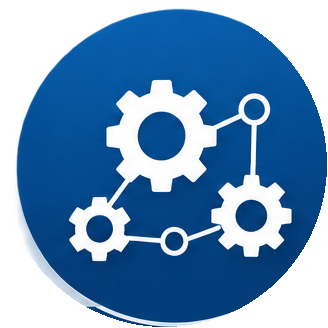
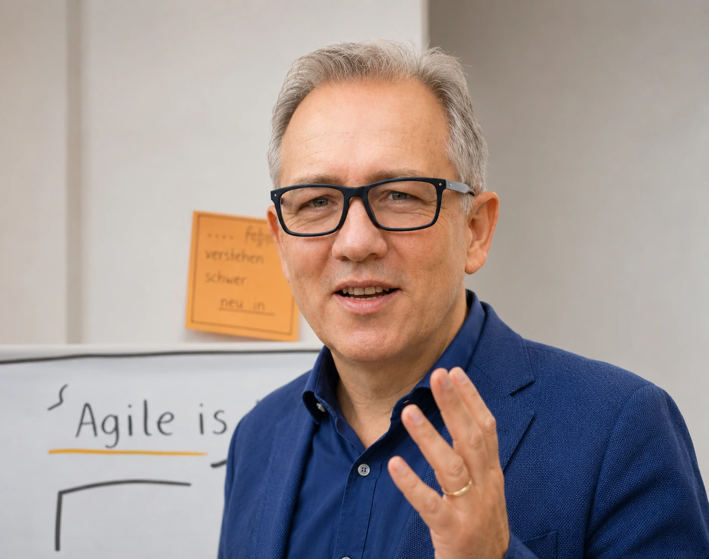

Komplexität nimmt zu
Technische, organisatorische und strategische Abhängigkeiten greifen ineinander; Einzelbereiche optimieren aus ihrer jeweiligen Perspektive.
Wenn Technik, Prozesse, Organisation, Interessen und Menschen ineinandergreifen, reicht klassisches Projektmanagement allein häufig nicht aus. Ich unterstütze dabei, Zusammenhänge sichtbar zu machen, Steuerbarkeit herzustellen, Entscheidungen herbeizuführen und Zusammenarbeit zu ermöglichen.
Der Bedarf entsteht häufig dort, wo ein einzelnes Problem nur ein Symptom für Abhängigkeiten im Gesamtsystem ist.

Technische, organisatorische und strategische Abhängigkeiten greifen ineinander; Einzelbereiche optimieren aus ihrer jeweiligen Perspektive.
Ziele, Verantwortlichkeiten, Sachstände oder notwendige Entscheidungen sind nicht ausreichend geklärt.
Unterschiedliche Interessen, Arbeitsweisen und Organisationsstrukturen behindern das gemeinsame Ergebnis.
Risiken werden erst intensiv bearbeitet, wenn erste Auswirkungen sichtbar sind und Handlungsspielraum verloren geht.
Meine Kernkompetenz ist, komplexe sozio-technische Projektsysteme funktionsfähig zu machen – unabhängig von Branche, Technologie oder Organisationsform.
Zusammenhänge und Abhängigkeiten transparent machen, unterschiedliche Perspektiven zusammenführen und daraus eine gemeinsame Zielsetzung ableiten.
Viele Abhängigkeiten und Interessen greifen ineinander. Technische und organisatorische Fragestellungen lassen sich nicht sinnvoll getrennt betrachten.
Technische, organisatorische und strategische Zusammenhänge werden sichtbar. Auswirkungen von Entscheidungen lassen sich über Bereichsgrenzen hinweg beurteilen und gegenüber Management und Gremien nachvollziehbar darstellen.
Aus dem ursprünglichen Auftrag zur Realisierung einer IT-Plattform entwickelte sich eine strategische Gesamtaufgabe. Neben der technischen Umsetzung wurden die Voraussetzungen für den Betrieb als Public ISP, die erforderlichen Prozesse nach DSGVO und TKG sowie angepasste SLA-Strukturen erarbeitet. Parallel wurde der Aufbau einer neuen Produkteinheit begleitet.
Projektstruktur, Verantwortlichkeiten und Entscheidungsfähigkeit klären und daraus eine belastbare Grundlage für die weitere Umsetzung schaffen.
Ein Projekt ist verspätet, unübersichtlich oder schwer steuerbar; Verantwortlichkeiten und notwendige Entscheidungen sind teilweise ungeklärt.
Projektteam und Management arbeiten auf einem gemeinsamen Sachstand. Verantwortlichkeiten und offene Entscheidungen werden transparent; Entscheidungen können vorbereitet, herbeigeführt und dokumentiert werden.
In einem Beschaffungsprojekt startete das IT-Teilprojekt rund 18 Monate nach Beginn des Gesamtprojekts. Anforderungen und Verantwortlichkeiten wurden neu geordnet, eine Make-or-Buy-Entscheidung im Abgleich mit der CIO-Strategie herbeigeführt und Arbeitspakete parallelisiert. Der Rückstand zum Gesamtprojekt konnte innerhalb von zwölf Monaten aufgeholt werden.
Unterschiedliche Perspektiven und Interessen sichtbar machen, gemeinsame Ziele klären und Strukturen für eine konstruktive Zusammenarbeit schaffen.
Bereichsinteressen, unterschiedliche Arbeitsweisen oder Konflikte behindern die Zusammenarbeit und erschweren gemeinsame Entscheidungen.
Konflikte können stärker auf Sach- und Lösungsebene bearbeitet werden. Schnittstellen und Verantwortlichkeiten werden klarer und unterschiedliche Arbeitsweisen können miteinander verbunden werden.
In einem Modernisierungsprojekt wurden Synergien mit mehreren parallel laufenden Schwesterprojekten erkannt. Die Projektplanung wurde um eine koordinierte projektübergreifende Zusammenarbeit erweitert. Neu beschaffte Komponenten konnten bereits beim ersten Fahrzeug eingesetzt und zusätzliche Umbauten ohne weitere Standzeiten integriert werden. Das gemeinsam entwickelte Einbaukonzept floss in laufende Neubeschaffungen ein und reduzierte den Aufwand für spätere Technologie-Upgrades von rund vier Stunden auf etwa 20 Minuten je Komponente.
Risiken bis zu ihren Ursachen zurückverfolgen und Maßnahmen dort ansetzen, wo kritische Entwicklungen noch beeinflusst werden können.
Risiken werden vor allem über mögliche Auswirkungen beschrieben und erst dann intensiv bearbeitet, wenn erste Auswirkungen bereits sichtbar werden.
Kritische Entwicklungen werden früher sichtbar. Projektleitung und Management behalten Handlungsspielraum; Firefighting und Eskalationen können reduziert und wiederkehrende Probleme an ihren Ursachen bearbeitet werden.
Ein typisches Risiko lautet: „Die Lieferung wichtiger Komponenten verzögert sich.“ Häufig richtet sich der Blick dann auf Maßnahmen für den Fall des Verzugs. Ursachenbasiert lautet die vorgelagerte Frage: „Besteht das Risiko, dass wir einen möglichen Lieferverzug zu spät erkennen?“ Dadurch können Maßnahmen ansetzen, solange das Projekt noch Handlungsspielraum besitzt – etwa durch engere Abstimmung mit dem Lieferanten oder die frühzeitige Einbindung von Einkauf und Management.
Die Rolle richtet sich nach der Situation im Projekt: operative Verantwortung übernehmen oder vorhandene Verantwortung stärken.
Wenn operative Führung, Struktur und verlässliche Umsetzung benötigt werden.
Wenn ein Projektleiter oder Team vorhanden ist und Unterstützung bei komplexen Situationen benötigt.

Ausgangspunkt ist die tatsächliche Situation im Unternehmen. Methoden und Projektstrukturen werden an Organisation, Kultur, Entscheidungslogik und Arbeitsweise angepasst.
Meine Projekte bewegen sich häufig an Schnittstellen: zwischen Technik und Business, unterschiedlichen Organisationseinheiten, Kunde und Lieferant oder klassischen und agilen Arbeitsweisen.
Als Diplom-Ingenieur, Projektmanager und Project Coach verbinde ich technisches Verständnis mit Projektsteuerung, Leadership und einer systemischen Betrachtung komplexer Projektsituationen.
Für ein erstes Gespräch reichen Ausgangslage, Zielsetzung und die derzeitigen Herausforderungen.